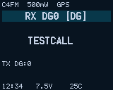
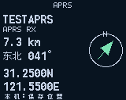
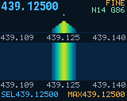
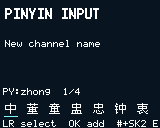

C4FM DN
主屏收发、异频热点、房间查询与 GPS 位置。发射支持随板型而定。
v1.2.0-rc.16 多机型公测
从 FM／DMR 双守候到 C4FM DN、APRS 位置和瀑布频扫。先看固件界面示例，再按你的板型选包。
社区免费公测 · VRWZI／BIAOQ

点击界面图可查看原图。

主屏收发、异频热点、房间查询与 GPS 位置。发射支持随板型而定。

切换 ALL 和指定 TG 守听。来话主屏显示实际发来的组号。

收包显示对方坐标。有本机定位时还可查看距离和方向。

浏览频段上信号随时间的变化，再把接收频点移到感兴趣的位置。

中文菜单和名称编辑。首次安装需写入字库与拼音资源。
核对 5W／10W、背光引脚或主板版本。USB 名称只能提示升级模式。
网页在本机校验 SHA-256，并提取同一机型的 BIN。
先备份码表、校准与需要保留的记录，保存已确认可恢复的固件。选定机型后查看对应的升级步骤。
用电脑 Chrome 或 Edge，关闭占用 USB 的软件。在 Windows 上，浏览器访问 DFU 通常需要 WinUSB。检测只读取升级接口，刷写由 CPS 执行。
先报开机、背光与按键，再验 FM／DMR，最后按机型测试 C4FM、APRS 和中文输入。只填写实际做过的项目。